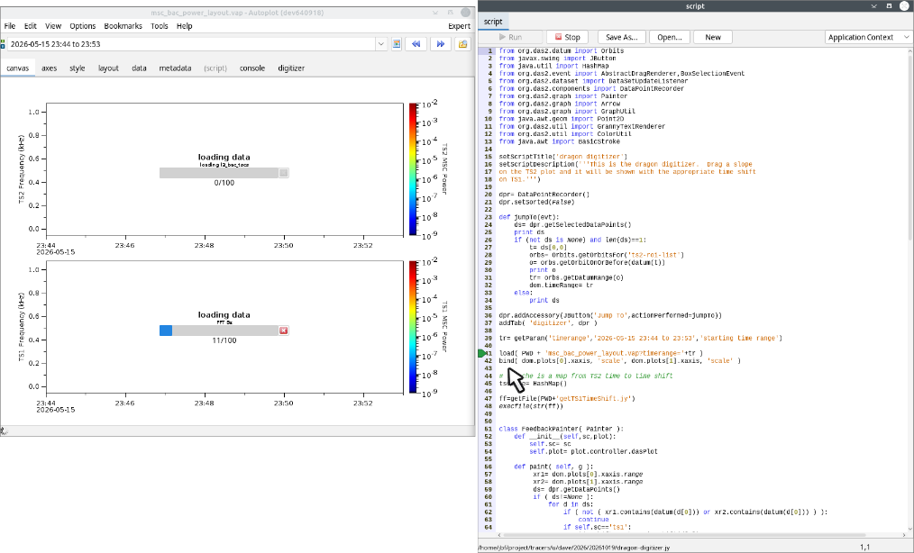

Autoplot Application (#{tag})
Single-Jar : .jar files can be launched on Windows and Mac, and contain a shell script for launching on Unix computers.
dmg: a self-contained installer for Mac computers.
exe: a self-contained installer for Windows computers.
Built with Install4J multi-platform installer builder and
deb and
rpm are available as well. Thanks, Install4J!
On 32-bit systems, use the single-jar release and a 32-bit version of Java. These systems will be limited to 1GB of memory.
Other Autoplot versions are available for about a year.

Annotations with %{CONTEXT,format=$H:$M:$S} macros show image location in time.
Autoplot allows plotting of data from many data sources, including remote CDF files and HAPI servers.
Datasets are identified with URIs, and by the URI's extension, data are loaded into one uniform data model. Data are
then displayed by determining the rendering method and axis ranges to provide a useful display with interactive axes and
mouse actions. The data can then be further processed with other operations like smooth and FFT, and Jython scripting
provides a capable programming environment.
This is the Autoplot v2026a branch. This is an update to the production version containing bugfixes and minor new features.
Java 8 is required.
Autoplot's development is guided by feedback from those using it. Thanks for your feedback!
Bugfixes (2026-11-11):
- 2921: Selecting a plot in the layout shows the bindings for the plot.
- Clean up axis "change units" dialog and put a warning that the label should be updated.
- 2920: bind command should not insert binding into the dom, when a converter is used.
Older Bugfixes (2026-11-11):
- TimeUtil.next(SECOND,t) didn't increment property.
- new code in restoreState assumed that the "deltas" was non-null, breaking the "vapfile:" prefix.
- Slice filter dialog properly enables the datum field.
- 2916: Sequence to loose work in editor fixed.
- 2918: ASCII file with start, stop times is treated as events list.
- 2917: Windows would grow each time a dialog was opened and closed. Thanks, Dave!
- Improve formatting of DatumRanges, using the same DatumFormatter on min and max and using new improved code to pick the formatter.
- "Save As" dialog is sized properly. Thanks, Ivar!
- Delay resolution of macros like %{RANGE} until necessary.
- More tweaks to HAPI dataset filter, after noticing it still is doing things with each keystroke.
- Some overly verbose logging with --script argument quieted.
- "slices" function explicitly checks for ":" so that one doesn't assume "10:20" would be acceptable. Thanks, Dave!
- 2913: TimeRangeDialog and others are resizeable.
- 2906: Embed data in .vap works with orbit datum ranges with local file references. Thanks, Dave!
- 2882: ASCII data source also kept state which caused runtime error on reload.
- Minor clean up of PngWalkTool while considering more major corrections with ChatGPT.
- splitAnchorType with verticalAnchorType=PLOT was incorrectly implemented, locating the plot as if it were "DATA".
- 2903: delim-based ASCII parser will always skip empty lines. Thanks Darrelle!
- Das2 PropertyEditor doesn't show the button for the custom property editor if it is the (useless) default editor.
- Support Rank 3 data in Export All Data. Don't assume data has timetags. Thanks, Ivar!
- 192:: synchronizeNN had incorrect test on "close" point, resulting in fill value when NN was possible. Thanks, Darrelle!
- 2901: Revert change which broke UIowa digitizing script.
- 2900: Clean up event handling in HAPI Data Source Editor, correct recents.
Features:
Less recent features:
- Slice filter dialog supports mouse wheel events on the time, incrementing or decrementing the component.
- 893: Jython debugger is used to implement trace when running scripts (ctrl+Run).
- 893: Jython editor double-click is Jython-aware and is more likely to select useful fragments.
- 893: new Jython debugger enabled with environment variable "jythonDebugger=true"
- 892: floating stdout bubbles in Jython editor.
- New totalSpectralPower function added, showing total power in waveform components. Thanks, Dave and George!
- 889: CDAWeb, HapiDataSource now uses simple filter strings, like "rbsp AND density NOT source".
- 890: New PDS4 reader supports Java 8 and will be maintained within Autoplot.
- Huge Scatter performance gain with 126M-point dataset, from 2800ms -> 500ms per draw, by using addValue to increment count and removing loop invariants.
- Kludgy unit "rgbColor" detected now and colorbar is turned off.
- 888: support rank 3 and rank 4 data in .mat files. Thanks, Ivar!
- 2901: New code for simplifyScriptToGetParams operates on the AST, not the source, so is more reliable.
- 2902: HAPI JSON read capability is available in the GUI.
- 2900: Jemmy regression testing of HAPI server dialog.
Data is input from:
- ASCII files (.dat,.txt)
- CSV files (.csv)
- Binary files (.bin)
- CDF files(.cdf)
- OpenDAP servers (.dds, .dods)
- PDS4 files (.lblx)
- PDS3 files (.lbl)
- Excel spread sheets (.xls)
- das2Streams (.d2s, .d2t, or .das2Stream)
- HAPI Servers (vap+hapi:)
- CDAWeb data server (vap+cdaweb:)
- Das2Servers (vap+das2server:)
- QStreams (.qds) (serialized version of internal model QDataSet)
- Plasma Wave Group das2 Server
- NetCDF files (.nc,.ncml)
- HDF5 files (.h5,.hdf5)
- DODs servers (.dds)
- Cluster Exchange Format files (.cef)
- Fits Format Files (.fits)
- Images (.jpg, .png, .gif)
- Wav audio files (.wav)
- ODL files (.sts)
- IDL Savesets (.sav)
- Matlab .mat files
- NumPy .npy files
- JSON lines file (.jsonl)
- RadioJove .sps and .spd files
- ESA TFCat files (.tfcat)
autoplot.org is the website containing
more information than this launch page.